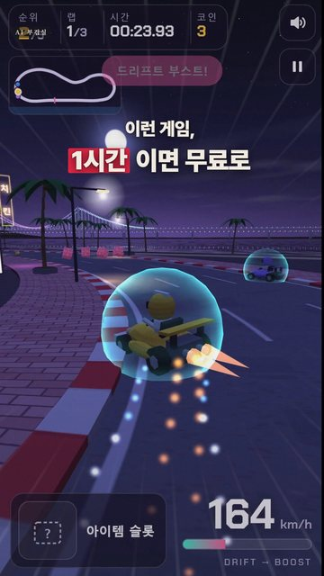

브라우저에서 바로 하는 3D 카트 레이싱 게임도 클로드 코드로 1시간이면 만들 수 있습니다. GPT-6 Astra나 힉스필드 없이, 툴 값 0원, 필요한 건 클로드 하나입니다.
만드는 법 ① 클로드 코드에 원하는 게임을 한 번에 적기 — 배경, 카트 수, 랩 수, 드리프트·아이템, 미니맵, 폰 조작까지(아래 지시문) ② 그림 파일 없이 전부 코드로 그리게 하기 — 하늘·건물·네온 간판까지 HTML 파일 하나(Three.js) ③ 더 넣고 싶은 건 말로 추가 — 모드·설정 화면 8분, 뉴욕·파리 맵 27분 기본 게임은 57분 걸렸습니다.
실제로 쓴 지시문(게임 사양 부분 원문, 파일 경로·내부 작업 지시만 뺌): 브라우저에서 바로 플레이하는 3D 카트 레이싱 게임을 만들어 주세요. - 배경 '광안리 밤바다' 느낌: 도로 왼쪽 상가와 네온 간판, 오른쪽 보도·야자수·모래사장·바다, 먼 바다에 조명 켜진 다리(광안대교를 연상시키는 현수교 실루엣 — 실제 로고·사진 복제 금지, 직접 그린 도형), 노을+블루아워 하늘, 바다 반사. 텍스처는 전부 캔버스로 그리는 절차적 텍스처(외부 이미지·폰트 파일 금지). - 끊김 없는 순환 코스(약 900m 감각), 플레이어 1대 + AI 4대가 가로로 나란히 출발, 3랩. 드리프트(드리프트 게이지 → 부스트), 차량 충돌, 아이템 상자(부스트·보호막·바나나 중 하나), 코인 25개 분산, 바나나 밟으면 짧게 미끄러짐. HUD = 순위·랩·시간·속도(km/h)·아이템 슬롯·미니맵. 결과 화면(순위·기록) + 다시 하기. - 조작: 키보드(방향키/WASD, Shift 드리프트, Space 아이템) + 폰 터치(화면 버튼). 폰 세로·가로 모두 플레이 가능하게, 60fps 목표(폰은 픽셀비 낮추기). - 소리: Web Audio 합성 효과음(엔진·부스트·코인·충돌), 첫 터치 이후에만 재생, 음소거 버튼. - 카트는 Three.js 기본 도형으로 만든 귀여운 로우폴리 카트(색 5종), 운전자 인형도 도형으로. - 외부 스크립트는 버전 고정(three.js r128). 이미지·데이터·fetch 외부 호출 금지 — 전부 인라인·절차 생성.